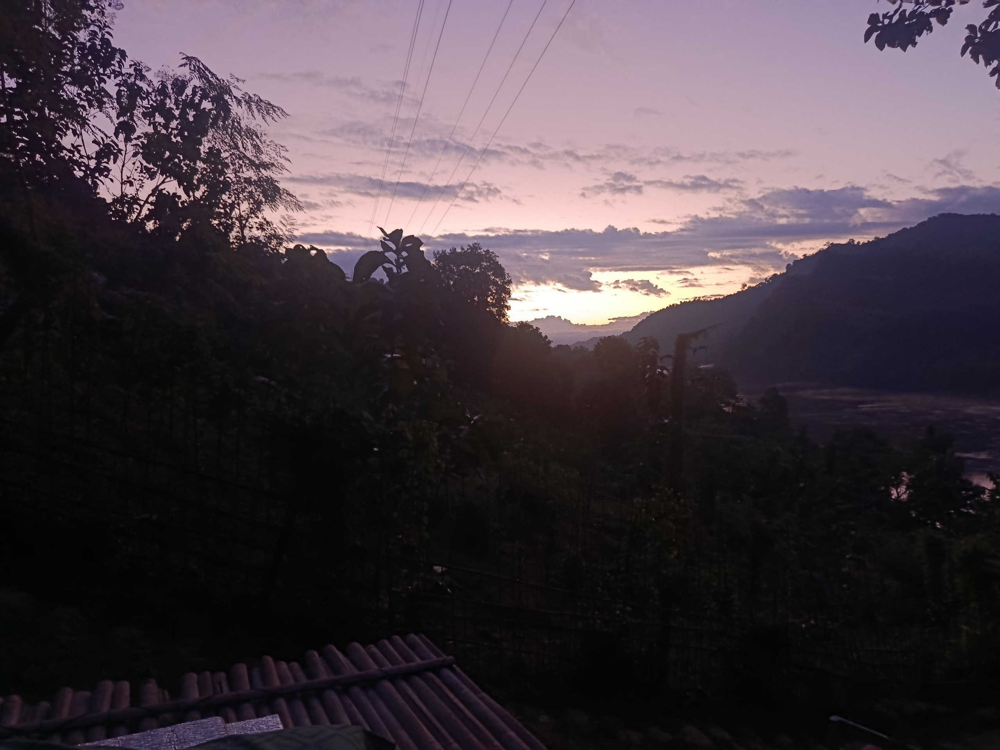

My Travel Blog
Last year I went on a trip to Kaptai,Rangamati. Not the main place, where almost every tourists go. Rather than we went to the different point in Kaptai. We can say that the hidden beauty of Kaptai, as it's not the touristic part. So less population, only a few locals and endless beauty.
